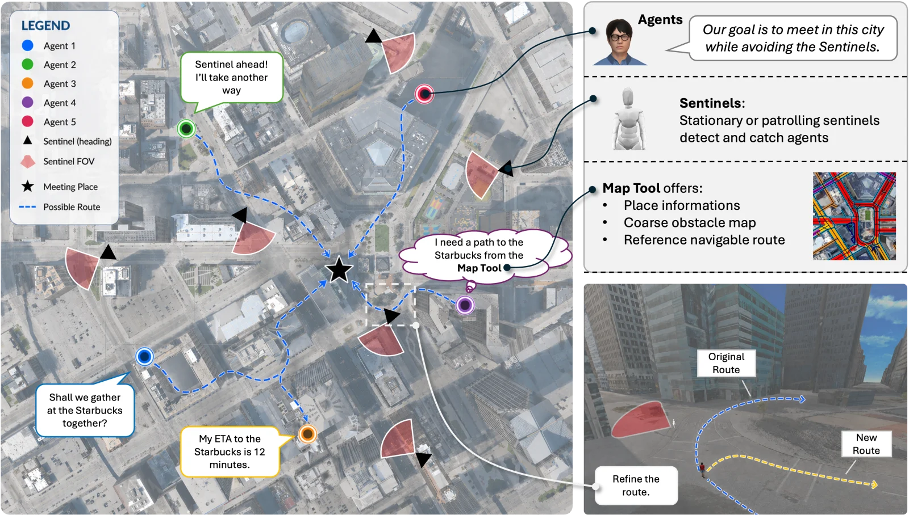
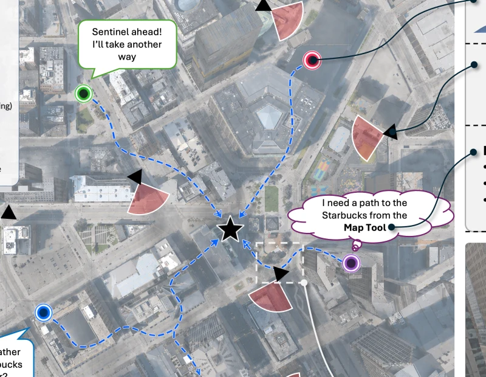

Sentinel: a benchmark for cooperative spatial intelligence.

Meeting in the city
The agents start in different places and must decide where to meet. Each sees only its own surroundings, so teammates exchange messages to choose a place everyone can reach. The team succeeds only if all agents arrive without being caught by a sentinel.
What is the environment?
- Scenes: 24 reconstructions of urban neighborhoods in the Virtual Community simulator, each about 800 × 800 m.
- Places are predefined locations in the city where agents can meet. Each scene contains 50–150 places. Agents start indoors and initially know only some of them.
- Map tool: A static map built in advance for each city. Agents can look up places and request routes along the road network. The map does not track sentinels.
- Configuration: Up to 15 agents and 20 sentinels per scene.
What are sentinels?
Sentinels are simulated lookouts. They can detect agents outdoors, but not inside buildings.
- Movement: Stationary sentinels rotate in place. Patrolling sentinels follow predefined routes.
- Detection: When a sentinel spots an agent, it issues a warning and starts a countdown. The closer the agent is, the faster the countdown runs.
- Escape or capture: Leaving the sentinel’s field of view resets the countdown. If it reaches zero, the agent is caught and the team cannot succeed.
What does an agent observe?
- First-person view: RGB-D image · 512 × 512 px resolution · 90° field of view (FOV).
- Team messages: Reports and proposals from other agents.
- Map results: Place information, waypoint routes, or a coarse overhead map, depending on the query.
What can an agent do?
- Navigate: Follow a route or change course to avoid a sentinel.
- Communicate: Send teammates a message, such as a warning or a proposed meeting place.
- Query the map: Look up a place or request a route.
- Signal completion: Report arrival at the meeting place.
How is a run scored?
Success rate: the fraction of runs in which all agents reach the same place uncaught within 1,500 steps.
- Caught rate: fraction of agents captured.
- Detected rate: fraction of steps when a sentinel detects at least one agent.
- Time: steps until the team gathers.
- Distance: sum of the distances traveled by all agents.
Why the team changed its meeting point
The team had agreed to meet at a bus stop. When Steve’s estimated travel time rose from four minutes to nine, he asked the others to consider another location.
Megan suggested a bike station near her and asked how long it would take the others to get there. Allen was nearly eight minutes away. After comparing his estimate with Megan’s and Steve’s, he recommended switching to the bike station.
Compare the agents’ estimates
Steve’s estimate to the bus stop rose from 4:09 to 9:04. For the proposed bike station, Megan estimated 3:42, Allen 7:52, and Steve 8:30.
Travel times are estimates, not recorded arrivals. Original exchange · Figure 6 ↗
Benchmark results
Five agents, ten sentinels. A run counts as a success only when all five agents reach the meeting place uncaught.
| Method | Stationary sentinels | Patrolling sentinels |
|---|---|---|
| Oracle Centered | 7.14 | 14.29 |
| Oracle Centered + danger zones | 11.90 | 29.76 |
| MCTS | 10.71 | 15.48 |
| RoCo | 26.19 | 29.76 |
| CoELA | 16.67 | 26.19 |
| MAT | 0.00 | 7.14 |
| CoSaR (ours) | 32.14 | 32.14 |
CoSaR achieved the highest team success rate in both settings. A lower capture rate did not guarantee a higher team success rate. With patrolling sentinels, fewer CoELA agents were caught than CoSaR agents (18% vs. 28%), but fewer CoELA teams finished (26% vs. 32%).
Table 1: all five metrics and oracle-perception results ↗Run an episode in Detroit.
This example runs CoSaR with three agents, one stationary sentinel, and ground-truth segmentation.
Before you start: The supplied runner uses a GPU, calls GPT-4o through Azure, and enables indoor scenes. Configure Azure GPT-4o access and follow the indoor asset instructions before running it.
Install the simulator, activate its environment, then run the command from the repository root:
bash sentinel_challenge/gt_scripts/run_cosar.sh DETROIT 3 stationary 1 0Paper and citation
Sentinel: Embodied Cooperative Spatial Reasoning and Planning
Xiangye Lin*, Hongxin Zhang*, Ruxi Deng, Qinhong Zhou, Chuang Gan
* Equal contribution
About CoSaR
CoSaR is the method introduced alongside the benchmark. Each agent maintains a spatial memory of hazards, teammates’ locations, and estimated travel times. It updates that memory from observations and messages, then decides whether to communicate, query the map, navigate, or wait.
Cite this paper (BibTeX)
@misc{lin2026sentinel,
title = {Sentinel: Embodied Cooperative Spatial Reasoning and Planning},
author = {Lin, Xiangye and Zhang, Hongxin and Deng, Ruxi and Zhou, Qinhong and Gan, Chuang},
year = {2026},
eprint = {2605.26239},
archivePrefix = {arXiv}
}